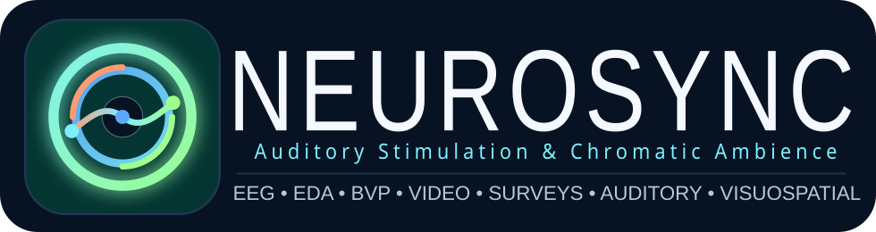

Study flow
Survey, acclimation, baseline, task, survey, task, survey
The platform keeps the session sequence legible while external systems record physiology and participant video.

About NEUROSYNC
NEUROSYNC platform is an experiment platform for synchronized multimodal sessions combining EEG, autonomic sensing, participant video, and auditory & visuospatial tasks blocks under chromatic ambient conditions.
Study flow
The platform keeps the session sequence legible while external systems record physiology and participant video.
Review mode
Review mode keeps stage navigation available so the full flow can be inspected page by page.
Live session
Live mode hides review navigation and presents the experiment as a cleaner participant-facing window.